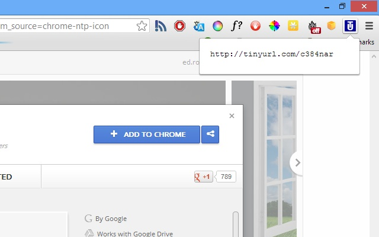

tiny url - 相见恨晚
楔子
刚开始做 scrum master 的时候，经常要发邮件广播 user story 的实施情况。我司使用 jira 来管理这些 user store。jira 提供了丰富的 search query 来搜索指定的内容。通常，我会将这些 user store 的 search query 包含在文件中，以便别人参考。但这个链接往往过长，非常不容易拷贝（虽然大部分使用者都是点击邮件中的链接浏览器自动打开相应页面），也非常影响整个邮件的排版。所以，通常我都会手动编辑这个链接的 display text，将原本默认展示的链接内容改成一个较短的名字。但这样一来，又不利于别人拷贝然后直接转发。
我的同事 Phoenix 是非常专业的 scrum 实践者，同时，也非常精通 jira。她告诉我，可以创建对应的 filter 来保存 query，然后只需要告知别人 filter 的链接或者名字就可以了。这个链接相对较短。我尝试了一下，很好用。但是，很多情况下我只是想临时分享一个长 url，也需要创建一个 filter。懒人思维作祟，我一定要知道另一个更加简便的办法，比如，输入长 url 自动转化为短 url，访问短 url 又能自动跳转到长 url。
这就是 tiny url。
tiny url
tiny url 并不是我自己创造的，而且它也并不是一个新概念 - 早在 2002 年已经问世了。想想早在 17 年前就有前辈发现问题并提出了应对办法，不得不说，十分敬佩。
这是 tiny url 官网，以及首页简介。
Are you sick of posting URLs in emails only to have it break when sent causing the recipient to have to cut and paste it back together? Then you’ve come to the right place. By entering in a URL in the text field below, we will create a tiny URL that will not break in email postings and never expires.
tiny url 提出的理念（长 url 转化为短 url）影响了很多人，数以千计的 tiny url（或者称为 url shorter）应运而生。有面向后台 service 提供解决方案的，如 rebrandly，有面向 app 提供本地支持的，如我正在使用的一个 chrome 扩展 tinyurl。如果我想要将当前正在浏览的网页地址分享给别人，只需要点击它，就能立刻生成一个短 url。

应用场景
- 使用二维码来分享 url，如果 url 长度超过二维码可存储的数据长度，使用 tiny url 是个不错的办法。
- 在某通讯工具中其假想敌的产品链接。知乎上有过类似讨论。
tiny product
tiny url 想做的事情很小，小的都没法写 ppt 去骗钱，但它依然有自己的价值 - 因为它确实解决了问题，虽然小，但帮助很多用户。比如对于我来说，简短的 url 看起来更加专业而精巧，所以邮件看起来也更加清爽。所以这就是所谓 tiny product 的价值。不求大而全，只要能在某个垂直领域做好，也能有自己的立足之地。这个规则可能不太适用于大投资的产品，毕竟他们普遍有盈利和上市的压力，但对于个人产品来说，能做到这份上，也算是不错的了。